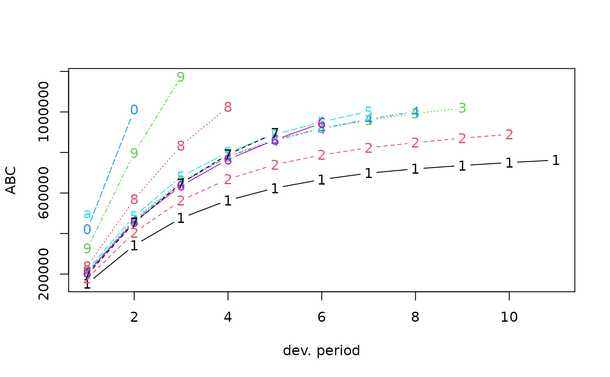
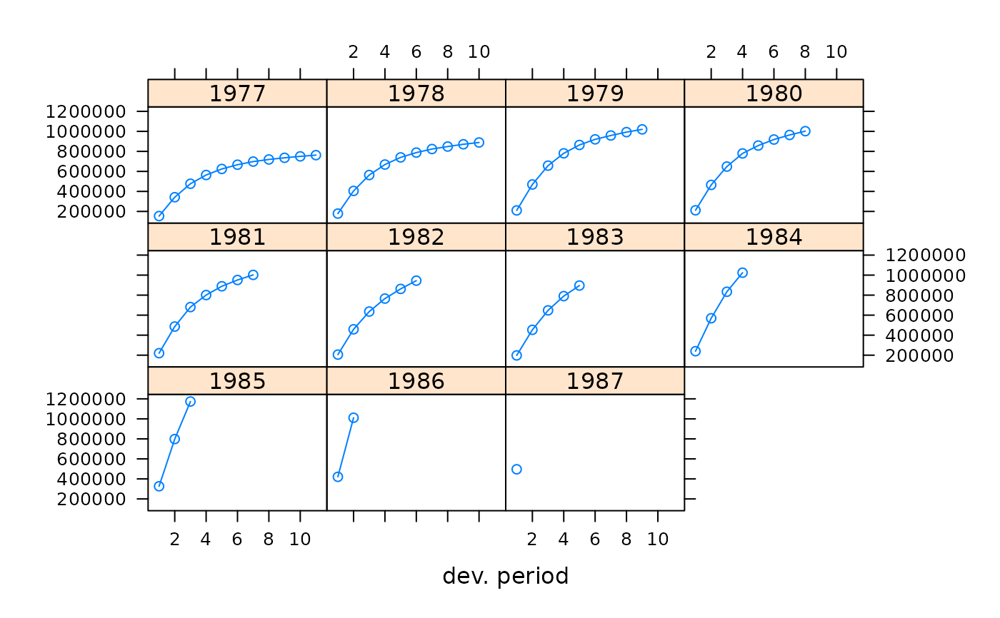

Run off triangle of accumulated claims data
ABC.RdRun-off triangle of a worker's compensation portfolio of a large company
Usage
data(ABC)Source
B. Zehnwirth and G. Barnett. Best Estimates for Reserves. Proceedings of the CAS. Volume LXXXVII. Number 167. November 2000.
Examples
ABC
#> dev
#> origin 1 2 3 4 5 6 7 8 9
#> 1977 153638 342050 476584 564040 624388 666792 698030 719282 735904
#> 1978 178536 404948 563842 668528 739976 787966 823542 848360 871022
#> 1979 210172 469340 657728 780802 864182 920268 958764 992532 1019932
#> 1980 211448 464930 648300 779340 858334 918566 964134 1002134 NA
#> 1981 219810 486114 680764 800862 888444 951194 1002194 NA NA
#> 1982 205654 458400 635906 765428 862214 944614 NA NA NA
#> 1983 197716 453124 647772 790100 895700 NA NA NA NA
#> 1984 239784 569026 833828 1024228 NA NA NA NA NA
#> 1985 326304 798048 1173448 NA NA NA NA NA NA
#> 1986 420778 1011178 NA NA NA NA NA NA NA
#> 1987 496200 NA NA NA NA NA NA NA NA
#> dev
#> origin 10 11
#> 1977 750344 762544
#> 1978 889022 NA
#> 1979 NA NA
#> 1980 NA NA
#> 1981 NA NA
#> 1982 NA NA
#> 1983 NA NA
#> 1984 NA NA
#> 1985 NA NA
#> 1986 NA NA
#> 1987 NA NA
plot(ABC)

plot(ABC, lattice=TRUE)
